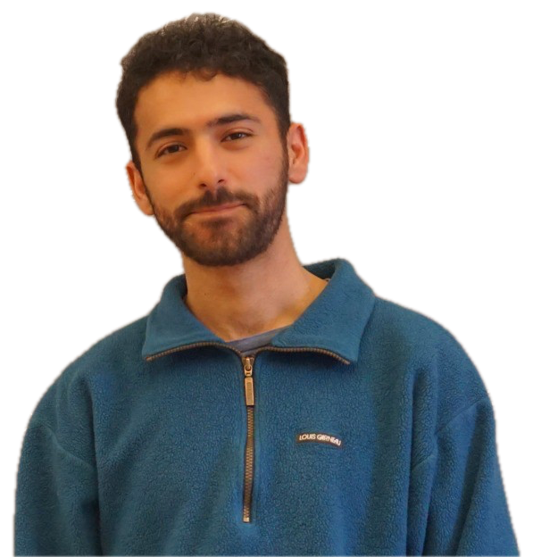

Looking for a bifurcation inside an LLM
Steering PANDA, looking for an oscillator, and learning a world model of the model.

I’m a PhD student in Quantitative Life Sciences at McGill, supervised by Morgan Craig and Amin Emad. I work on nonlinear dynamics and scientific machine learning.
I keep my notes on mathematics, biology and ideas still being sharpened ;) here
Steering PANDA, looking for an oscillator, and learning a world model of the model.
Learning a starting point, an update field, or a policy around the solver.
Noise-robust SINDy, forecast survival, and what foundation models changed.
SIAM Conference on the Life Sciences (LS26) · Cleveland, Ohio ·
MS11: Recent Advances in Digital Twins and Trial Simulations to Guide Clinical Decisions